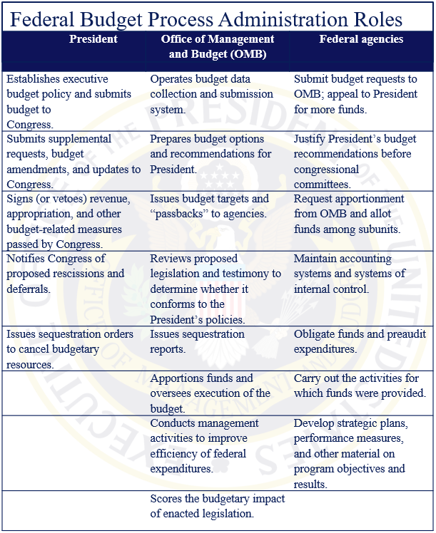

Formulation - Step 7: President Budget submission to Congress

OMB transmits the President’s Budget to the Congress on or after the first Monday in January but not later than the first Monday in February of each year for the following fiscal year. In years when a Presidential transition has taken place, this timeline for budget release is commonly extended to allow the new administration sufficient time to take office and formulate its budget policy. While there is no specific timeline set for this circumstance, the detailed budget is usually completed and released in April or May. However, in order to aid the congressional budget process new administrations often release a budget blueprint that contains broad spending outlines and descriptions of major policies and priorities in February or March.
Under 31 U.S.C. Section 1105, the President is required to provide certain information in the budget submission to Congress. The complete list of content the President is required to submit as part of the budget proposal is extensive, and includes:
- 1. Estimated receipts, expenditures, and proposed appropriations for the next five fiscal years;
- 2. Actual receipts, expenditures, and appropriations for the previous fiscal year;
- 3. Information on the public debt;
- 4. Separate statements of amounts for specified appropriations accounts and trust funds, among other things.
The budget submission includes the following volumes:
- 1. Budget of the U.S. Government--includes summary pages highlighting the President’s policy priorities, budgetary aggregates tables, and a detailed narrative description of proposed government activities, organized by issue and agency;
- 2. Historical Tables--provides a historical overview of federal government finances, including time series statistics on budget authority, government receipts, outlays, government employment, gross domestic product (GDP), and the federal debt going back several decades and in some cases as far back as 1789;
- 3. Analytical Perspectives-- contains in-depth analysis of government programs, including credit and insurance programs, discussion of crosscut budgets that span two or more agencies, and technical explanation of the budget baselines used in the analyses and estimates contained in the President’s budget proposal;
- 4. Appendix --includes detailed budget estimates and financial information on individual programs and appropriations accounts, proposed text of appropriations language, and information on the legislative and judicial branch appropriations that are not included in other volumes of the President’s budget proposal;
- 5. Supplemental materials – such as legislative proposals for budget process reform, a brief guide to the budget that is intended for members of the public, or a summary of proposed spending reductions or program consolidations.
The President may also update the budget by submitting supplemental requests and revisions to Congress. The President is required to submit a supplemental summary of the budget, commonly referred to as the Mid-Session Review (MSR), before July 16 of each year. The MSR is required to include any substantial changes in estimates of expenditures, receipts, or substantial changes to obligations plus any changes in outlays or budget authority requested. The MSR may reflect changes in economic conditions, budgetary actions taken by Congress, or other factors that have led the President to make adjustments to the initial budget submission.
The OMB plays an essential role in the preparation of the President’s budget submission to Congress. OMB sets forth the framework by which federal agencies formulate their budget requests, and is responsible for ensuring agency budget requests are consistent with the President’s agenda and policy goals. As a consequence, the OMB director potentially can wield a great deal of influence over agency budget requests and the final shape of the President’s budget. The finalized agency budgets are then incorporated into the budget the President submits to Congress. OMB is responsible for preparing the accompanying budget documents that provide an explanation and justification of the President’s government-wide budget policy. The budget documents then are printed and submitted to Congress and the public.
Once the President has submitted the budget, OMB and agency officials explain and justify the request to Congress. This frequently involves both formal and informal interactions. Early in the congressional budget process, often in the week following the submission of the President’s budget, the OMB Director and other Cabinet officials usually provide testimony regarding the President’s broad budgetary objectives before congressional committees. Once the President has submitted the budget, OMB and agency officials explain and justify the request to Congress. This frequently involves both formal and informal interactions. Early in the congressional budget process, often in the week following the submission of the President’s budget, the OMB Director and other Cabinet officials usually provide testimony regarding the President’s broad budgetary objectives before congressional committees.
Agencies also submit written justification of their budget requests to the appropriations committee and subcommittees of jurisdiction in each chamber. Federal agencies budget submissions also include annual performance plan. Some of them have listed it as separate documents, while others integrate it into one document.
As budgetary legislation is being formulated by Congress, agency officials are often called before the appropriations subcommittees to justify and explain their budget requests to Congress. To ensure that all testimony and written justification materials are consistent with the President’s policy objectives, OMB reviews materials before agencies provide them to Congress. Agency testimony and written justification materials facilitate dialogue and information sharing between federal agencies and congressional committees. Justification materials are often the starting point for language contained in the committee reports that accompany each appropriations bill. Agency justification materials also provide program details that Congress may use when determining the amounts to be appropriated and the language to be included in reports accompanying appropriations acts. How well the documents explain and justify agencies budget requirement to fulfill their performance goal is essential. Finally, federal agencies and other Administration officials interact with Members of Congress informally. While the specifics of these informal communications are not public, committees may seek to develop ongoing relationships with the agencies within their jurisdiction.
Previous: Formulation - Step 6: OMB Decision and Reconciliation Next: Congressional Enactment Process